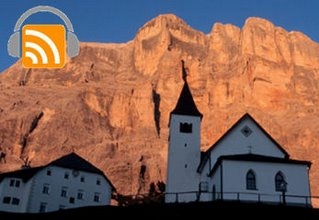

Dolomites, lakes, skiing and mountain climbing. Trentino region is located in the heart of the Italian Alps and is a mecca for active sport lovers. In this podcast interview, Katia Vinco of the Trentino tourism office, describes a variety of opportunities to enjoy this area throughout the year.